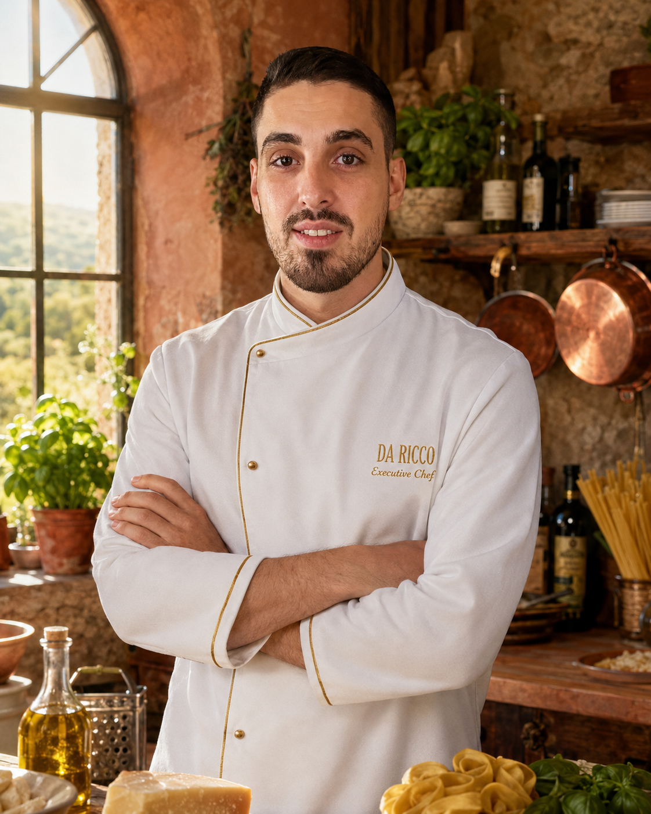

MY STORY
From Caserta to International Kitchens
Born in a small village in the Province of Caserta, Italy, my passion for cooking started with family traditions, authentic flavours and respect for quality ingredients.
For more than 13 years I have worked across Italy, Saudi Arabia, Qatar and Jordan, leading professional kitchens, creating menus, mentoring teams and delivering memorable dining experiences while staying faithful to authentic Italian cuisine.
Every kitchen has shaped my career, but my philosophy remains the same: simplicity, passion, discipline and hospitality.
